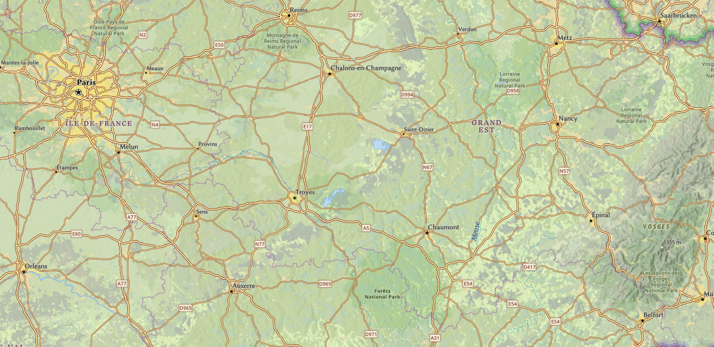

Tag, Tag, Tag, Tag
The Battle of the Catalaunian Fields, also known as the Battle of Châlons, was fought in 451 CE between a coalition led by the Roman general Flavius Aetius and Visigothic King Theodoric I against the invading Huns led by Attila. This clash, which took place in northeastern Gaul (modern-day France), was one of the last great military efforts of the Western Roman Empire and one of the most important confrontations of the Late Antiquity period.
By the mid-5th century, the Western Roman Empire was under immense pressure from internal decay and external invasions. Attila the Hun had already devastated large parts of the Balkans and was now turning westward. In 451, Attila invaded Gaul with a massive multi-ethnic army that included Huns, Ostrogoths, Alans, and other subject peoples, aiming to expand his influence and potentially sack key Roman cities like Aurelianum (Orléans).
In response, the Roman general Aetius—one of the last effective military leaders of the Western Empire—rallied an unlikely coalition of former enemies. This included the Visigoths under Theodoric I, the Franks, Burgundians, and even remnants of the Alans. Aetius, a seasoned diplomat and strategist, recognized that only a united front could stop Attila’s advance into Western Europe.
The two armies met near the Catalaunian Plains in Gaul. While ancient sources like Jordanes give differing accounts of the numbers involved, the battle is believed to have included over 100,000 combatants. The scale of the battle and the diversity of its participants reflected the complex and fragmented political landscape of post-classical Europe.
The battle began late in the day, which limited the fighting to a brief but brutal confrontation. The Roman-Visigothic coalition managed to seize the high ground early on, a crucial tactical advantage. During the chaos of battle, Theodoric I was killed—either by enemy soldiers or trampled by his own men—but his son Thorismund took command and led a successful counterattack.
Attila's forces were driven back to their encampment, and though not completely destroyed, they suffered heavy losses. Fearing annihilation, Attila did not press further into Gaul and began a strategic retreat. Aetius chose not to pursue aggressively, perhaps to maintain balance between Roman and barbarian powers or to preserve his fragile alliance network.
Although the battle ended inconclusively in a tactical sense, it was a major strategic victory for the Romans and their allies. It marked the first significant check on Attila’s expansion and prevented what could have been a catastrophic invasion of Western Europe. The Huns would never again launch such a large-scale campaign in Gaul.
Historians often debate the long-term impact of the battle. Some view it as the last stand of Roman military prowess in the West; others see it as a symbolic moment when non-Roman powers began to dominate European politics. Regardless, the victory at Catalaunian Fields delayed the collapse of Roman authority in Gaul and allowed successor kingdoms time to consolidate power.
The battle also contributed to the emerging identity of medieval Europe, as Roman and barbarian forces fought side-by-side to defend the continent from nomadic invaders. This fusion of Roman military traditions and Germanic leadership would become a hallmark of the early medieval era.
The Battle of the Catalaunian Fields remains a landmark in military and European history. It showcased the complexities of late Roman diplomacy, the significance of coalition warfare, and the limits of even the most feared invaders like Attila. Its legacy would echo in medieval chronicles and the political formations that followed the fall of Rome.